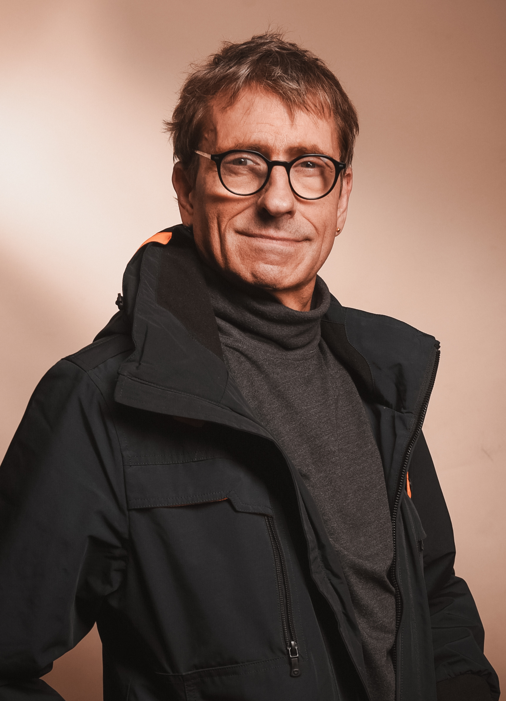

Nicht wie ich sein will –
sondern wer ich bereits bin.
KI-generiert aus echten Werten · Mehr dazu auf meiner KI-Seite
Über mich
Beziehung vor Erklärung.
Haltung vor Methode.
Wofür ich hier stehe
Ich begleite Menschen, die spüren, dass etwas aus dem Gleichgewicht geraten ist – ohne es vorschnell als persönliches Versagen zu deuten.
Mich interessiert weniger, was jemand „falsch gemacht" hat, sondern unter welchen Bedingungen ein Mensch überhaupt so reagieren musste.
Meine Haltung ist systemisch, regulativ und integral. Ich schaue nicht isoliert auf Symptome, sondern auf Zusammenhänge. Tempo raus und Regulation kommen für mich vor Erklärung. Ankommen vor Veränderung. Würde vor Diagnose.
Ich begegne Menschen klar, zugewandt und ohne Druck. Nicht als Problemlöser, nicht als Beschleuniger, sondern als jemand, der Raum hält, wenn es unübersichtlich geworden ist.
Was hier entsteht, ist kein Konzept und kein Versprechen. Es ist ein Raum, in dem Verstehen langsamer werden darf – damit wieder etwas tragfähig wird.
Wie diese Haltung entstanden ist
Meine Haltung kommt nicht aus Büchern.
Ich kenne Suchtdynamiken von innen – zwanzig Jahre lang. Delirien. Sozialer Abstieg. Körperlicher Verfall. Und irgendwann den einzigen Satz der mir geholfen hat:
Say yes to your Scheiß.
Heute lebe ich seit Jahren abstinent. Nicht weil ich stark war – sondern weil ich aufgehört habe zu kämpfen.
Daraus ist ein Blick gewachsen, der Symptome als verständliche Antworten auf Belastung versteht und Regulation vor Erklärung stellt.

Was ich gelernt habe
Ich habe gelernt, dass Einsicht allein selten verändert.
Dass Menschen nicht an fehlendem Willen scheitern, sondern an überforderten inneren Systemen.
Und dass nachhaltige Veränderung dort beginnt, wo Druck nachlässt und Orientierung entsteht.
Wie ich begleite
Ich begleite nicht mit schnellen Lösungen und nicht mit Druck.
Mein Fokus liegt darauf, Bedingungen zu schaffen, unter denen Tempo sinken darf, Zusammenhänge wieder sichtbar werden und eigene Orientierung entstehen kann.
Ich arbeite nicht daran, Menschen zu optimieren, sondern daran, Bedingungen zu schaffen, unter denen Selbstregulation wieder möglich wird.
Was hier zählt, ist nicht Leistung, sondern Tragfähigkeit – Schritt für Schritt, im eigenen Rhythmus.
Für wen das passt – und für wen eher nicht
Diese Begleitung passt für Menschen, die spüren, dass sie langsamer werden müssen, um wieder klarer zu sehen.
Für Menschen, die bereit sind, Zusammenhänge zu betrachten, statt sich selbst weiter unter Druck zu setzen.
Sie passt weniger für diejenigen, die schnelle Lösungen, klare Anleitungen oder sofortige Veränderung erwarten.
Nicht, weil das falsch wäre – sondern weil hier ein anderer Rhythmus gilt.
Wenn du weitergehen willst
Wenn du hier etwas wiedererkennst und in Ruhe weitergehen möchtest, kannst du dir auf den nächsten Seiten Zeit nehmen. Ohne Erwartung. Ohne Eile.